WORK / PRODUCT DESIGN CASE STUDIES
Complex challenges.
Real product stories.
Discovery, research, design systems, and delivery across healthcare, SaaS, and multi-role digital products.


Harmoni® by ThePause®
Rebrand, design system and a funnel diagnosis that nearly halved sign-up drop-off.
View case study ↗


VesselHaven
Role-based yacht management on a 65-component system. The Provider CRM shipped 7 screens with no new components.
View case study ↗


Vaults1
Sizes you can see and a quick-booking bar, plus sign-off on a project stalled for months.
View case study ↗
Remedy Design System 2.0
One themeable system for web and React Native. Leadership reported ~45% less dev time at handoff.
View case study ↗
She Matters
Sole designer on an iPhone and Apple Watch MVP that alerts her doctor or partner when symptoms turn dangerous.
View case study ↗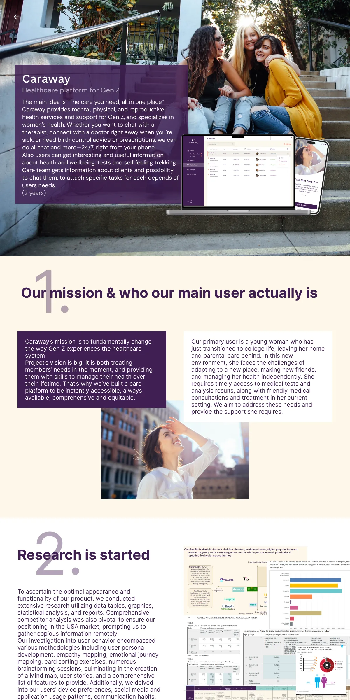
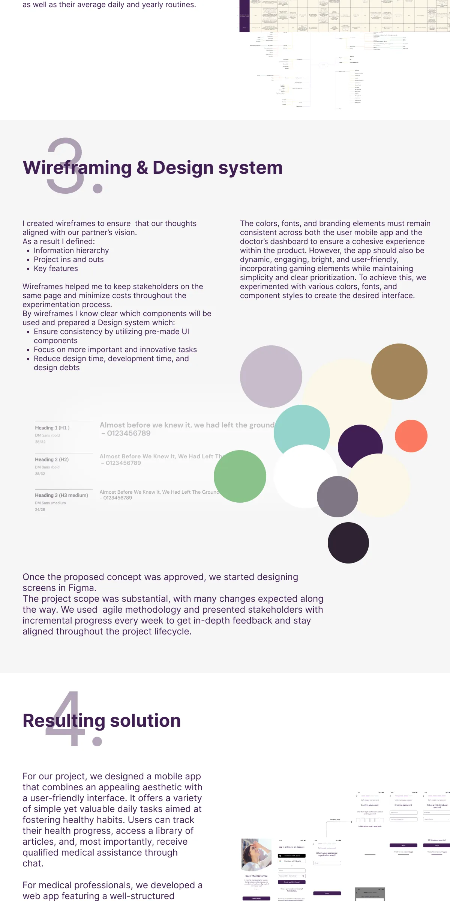
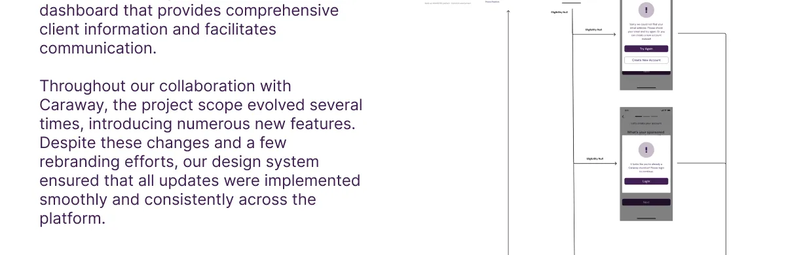
Caraway Health
Launched student health app, provider desktop app and SaaS admin, all on one design system.
View case study ↗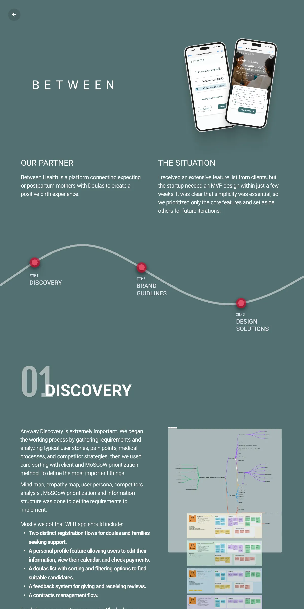
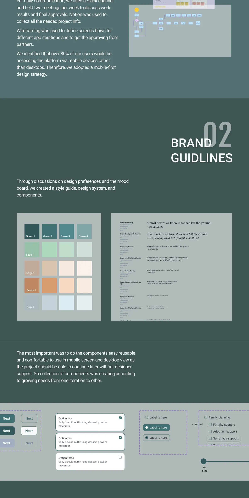
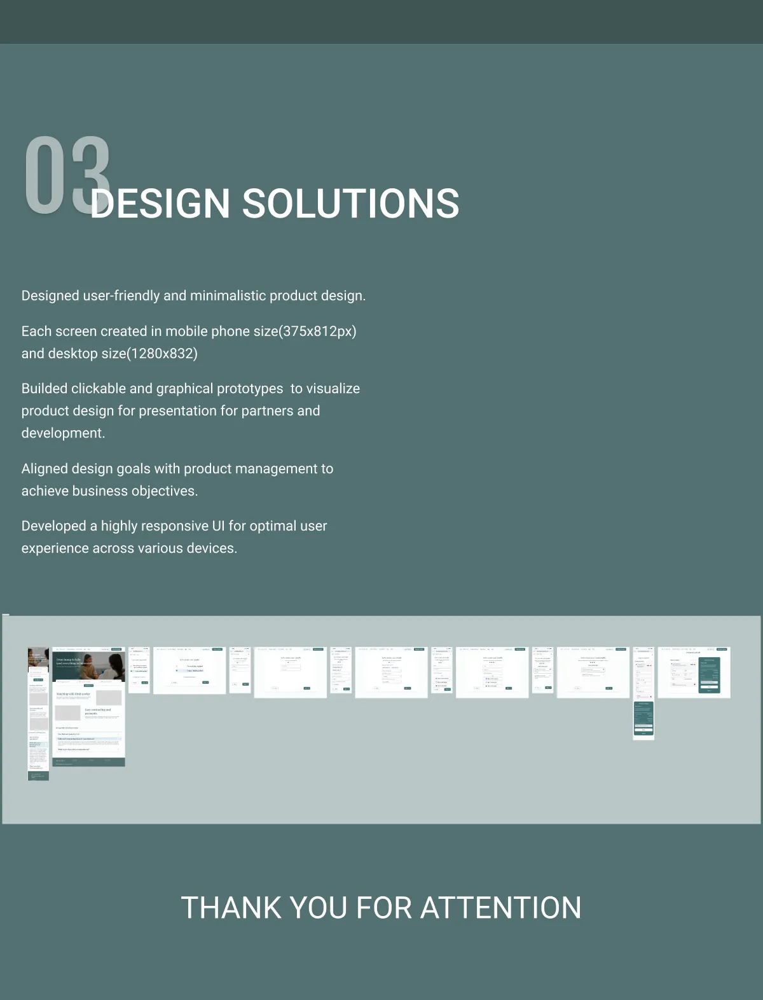
Between Health
A mobile-first MVP connecting mothers and doulas, built on a shared component library.
View case study ↗


Breakthrough Therapy
Patient journeys and a clinician dashboard for ketamine therapy programmes.
View case study ↗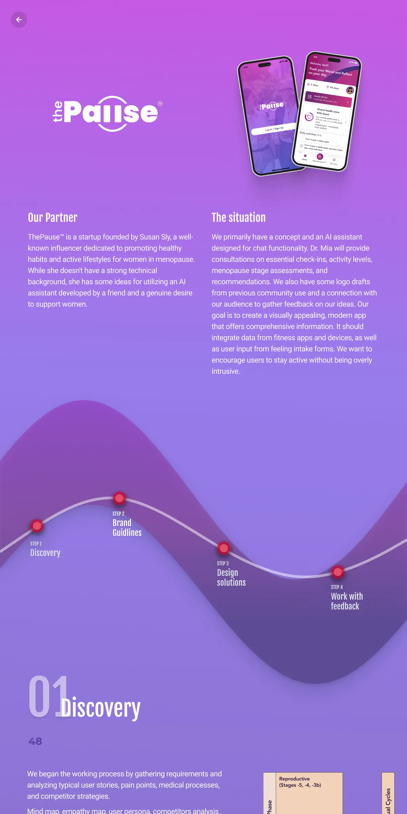
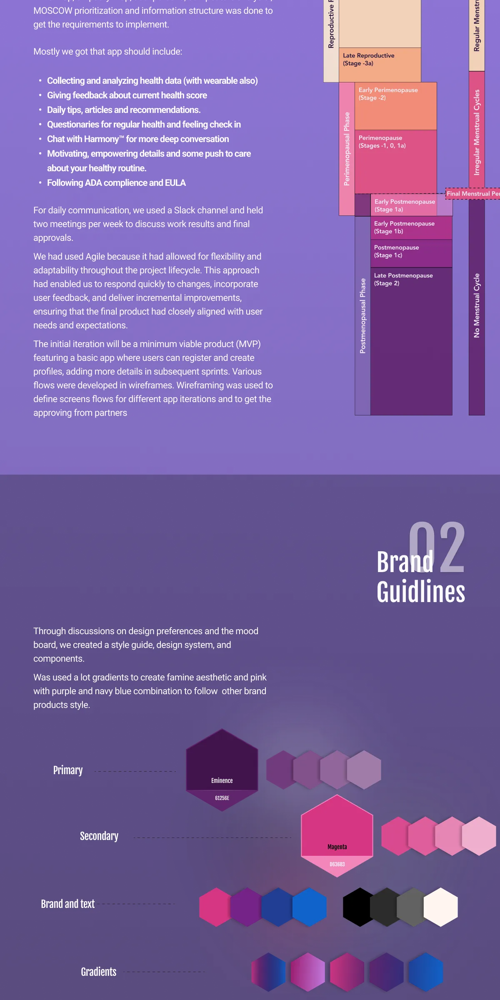
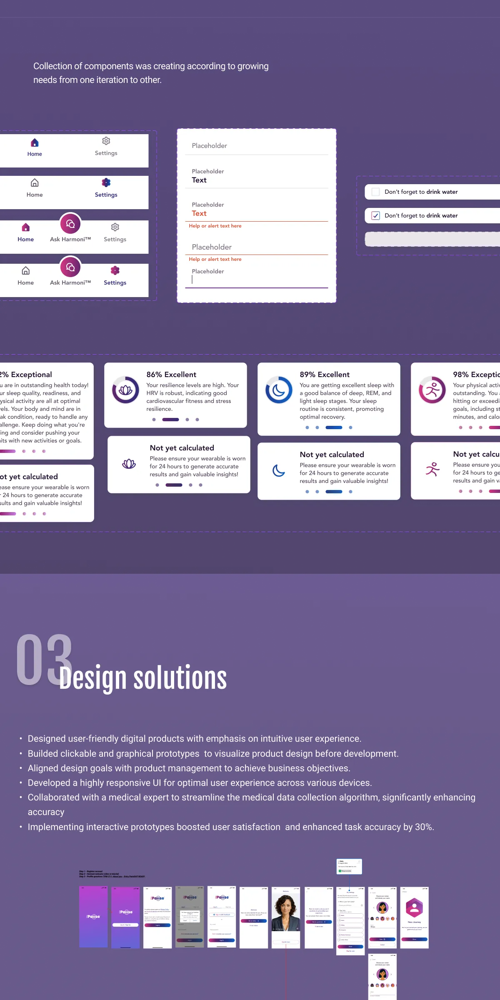
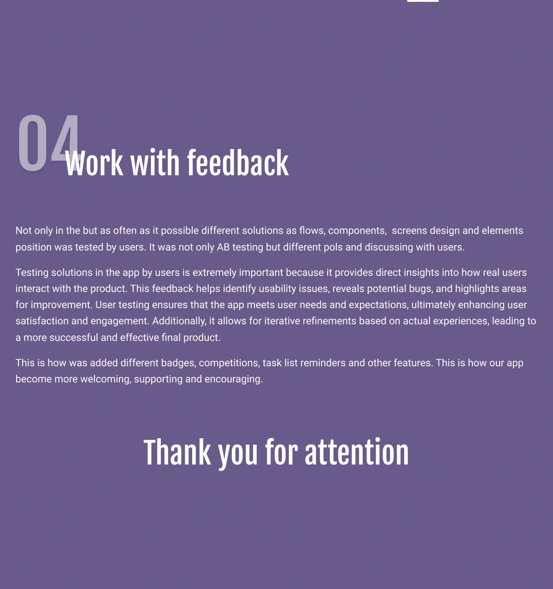
ThePause
The first ThePause app. Interactive prototypes raised task accuracy and user satisfaction by 30%.
View case study ↗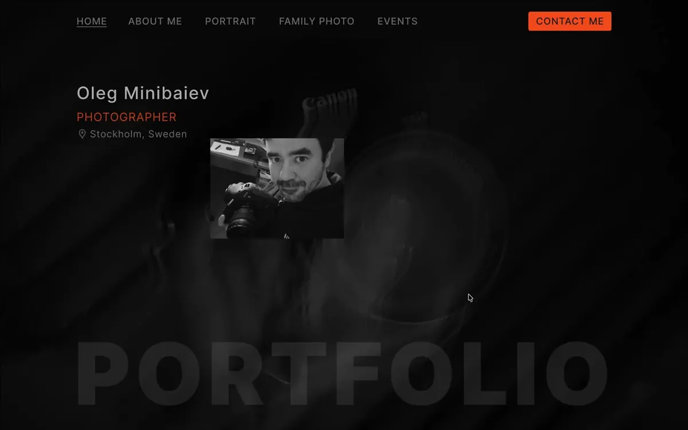
Photographer Portfolio
A portfolio that lets the photographs lead.
View case study ↗INDEPENDENT PRODUCTS & EXPERIMENTS
From an idea to something you can try.
ILLUSTRATION STUDIES · PRODUCT DESIGN · LIVE
A little crisis. A complete product.
An illustration-learning project turned into a reflective quiz: emotional habits, 17 expressive characters, and a marketing hypothesis built around self-discovery and sharing.